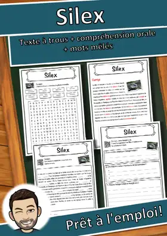

Fiches Culture générale
2736 fiches d'exercices en français sur le thème « Culture générale » : texte à trous, compréhension orale et mots mêlés, à imprimer (PDF) avec corrigé.
2.736 ressources
Niveau
Par niveau: 6e année

Magnésium – Fiche CM1-CM2 : texte à trous, compréhension orale et mots mêlés

Égout – Fiche CM1-CM2 : texte à trous, compréhension orale et mots mêlés

Zug – Fiche CM1-CM2 : texte à trous, compréhension orale et mots mêlés

Cirque – Fiche CM1-CM2 : texte à trous, compréhension orale et mots mêlés

Ukraine – Fiche CM1-CM2 : texte à trous, compréhension orale et mots mêlés

William Shakespeare – Fiche CM1-CM2 : texte à trous, compréhension orale et mots mêlés

Cire – Fiche CM1-CM2 : texte à trous, compréhension orale et mots mêlés

Thulium – Fiche CM1-CM2 : texte à trous, compréhension orale et mots mêlés

Tellure – Fiche CM1-CM2 : texte à trous, compréhension orale et mots mêlés

Les Mille et Une Nuits – Fiche CM1-CM2 : texte à trous, compréhension orale et mots mêlés

Oie – Fiche CM1-CM2 : texte à trous, compréhension orale et mots mêlés

Texte – Fiche CM1-CM2 : texte à trous, compréhension orale et mots mêlés
Slovène – Fiche CM1-CM2 : texte à trous, compréhension orale et mots mêlés

Silex – Fiche CM1-CM2 : texte à trous, compréhension orale et mots mêlés

Sierra Leone – Fiche CM1-CM2 : texte à trous, compréhension orale et mots mêlés

Choucroute – Fiche CM1-CM2 : texte à trous, compréhension orale et mots mêlés

Rouble – Fiche CM1-CM2 : texte à trous, compréhension orale et mots mêlés

Raclette – Fiche CM1-CM2 : texte à trous, compréhension orale et mots mêlés

Flûte traversière – Fiche CM1-CM2 : texte à trous, compréhension orale et mots mêlés

Praséodyme – Fiche CM1-CM2 : texte à trous, compréhension orale et mots mêlés

Pont – Fiche CM1-CM2 : texte à trous, compréhension orale et mots mêlés

Pied – Fiche CM1-CM2 : texte à trous, compréhension orale et mots mêlés

Niveau de la mer – Fiche CM1-CM2 : texte à trous, compréhension orale et mots mêlés

Cerveau – Fiche CM1-CM2 : texte à trous, compréhension orale et mots mêlés

Bologne – Fiche CM1-CM2 : texte à trous, compréhension orale et mots mêlés

Phosphore – Fiche CM1-CM2 : texte à trous, compréhension orale et mots mêlés

Peuple – Fiche CM1-CM2 : texte à trous, compréhension orale et mots mêlés

Peste – Fiche CM1-CM2 : texte à trous, compréhension orale et mots mêlés

Nez – Fiche CM1-CM2 : texte à trous, compréhension orale et mots mêlés

Monastère – Fiche CM1-CM2 : texte à trous, compréhension orale et mots mêlés

Mississippi – Fiche CM1-CM2 : texte à trous, compréhension orale et mots mêlés

Marionnette à fils – Fiche CM1-CM2 : texte à trous, compréhension orale et mots mêlés

Manille – Fiche CM1-CM2 : texte à trous, compréhension orale et mots mêlés

Loam – Fiche CM1-CM2 : texte à trous, compréhension orale et mots mêlés

Litre – Fiche CM1-CM2 : texte à trous, compréhension orale et mots mêlés

Laos – Fiche CM1-CM2 : texte à trous, compréhension orale et mots mêlés

Iroquois – Fiche CM1-CM2 : texte à trous, compréhension orale et mots mêlés

Ichthyosauria – Fiche CM1-CM2 : texte à trous, compréhension orale et mots mêlés

Ice – Fiche CM1-CM2 : texte à trous, compréhension orale et mots mêlés

Hoquet – Fiche CM1-CM2 : texte à trous, compréhension orale et mots mêlés

Géocaching – Fiche CM1-CM2 : texte à trous, compréhension orale et mots mêlés

Fée – Fiche CM1-CM2 : texte à trous, compréhension orale et mots mêlés

Eidgenossenschaft – Fiche CM1-CM2 : texte à trous, compréhension orale et mots mêlés

Dune – Fiche CM1-CM2 : texte à trous, compréhension orale et mots mêlés

Cigarette électronique – Fiche : texte à trous, compréhension orale et mots mêlés

Chevalier – Fiche : texte à trous, compréhension orale et mots mêlés

Caramel – Fiche : texte à trous, compréhension orale et mots mêlés

Brunei – Fiche : texte à trous, compréhension orale et mots mêlés
Aucune ressource trouvée – essaie un autre mot ou un autre filtre.